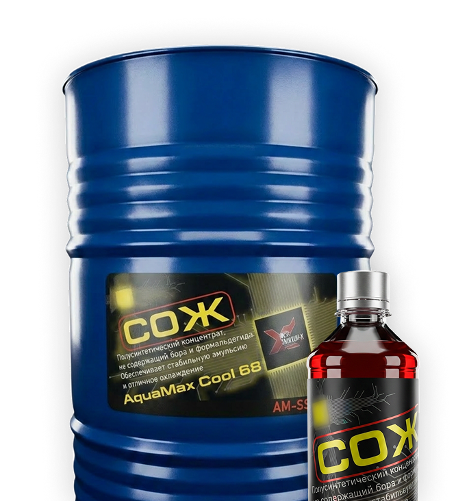
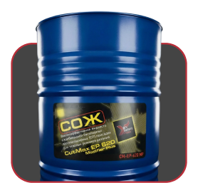
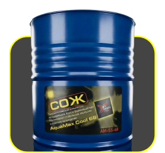
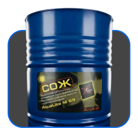

до −11%
Снижать износ инструмента и оборудования

Масляные, полусинтетические и минеральные составы для всех видов металлообработки — снижают износ и повышают качество поверхности.
Каждый состав проходит лабораторные испытания и проверку в производственных условиях. Разрабатываем СОЖ и комплексы Taikyuu-X (Тайкью-икс) на основе модификаторов поверхностей трения. Подбираем решение под задачи вашего предприятия.
Наши решения помогают предприятиям:
Снижать износ инструмента и оборудования
Повышать качество обрабатываемых деталей
Продлевать ресурс станков и узлов трения
Оптимизировать общие затраты на производство

Масляная (не водосмешиваемая)
Для высоконагруженных операций и максимального ресурса инструмента
Тяжёлое точение, фрезерование, глубокое сверление, резьбонарезание, MQL.

Водосмешиваемая (полусинтетика)
Премиальное решение для стабильности и качества поверхности
Универсальные и специализированные составы.

Водосмешиваемая (минеральная)
Практичные и выгодные решения для стандартных операций
Базовый набор присадок, простая эксплуатация.
Высокоэффективная жидкость для тяжёлых операций — нарезание резьбы, глубокое сверление, тяжёлое точение. Комбинация серо- и фосфорсодержащих EP-присадок, фосфатный эфир.
для закрытых систем, при высоких нагрузках и низких скоростях резания. Не смешивать с водой.
герметичная тара, +5…+35°C, защита от влаги и прямых солнечных лучей.
Универсальная водосмешиваемая полусинтетика для большинства операций — точение, фрезерование, сверление, шлифование. Стабильная эмульсия, длительный срок службы.
разбавление чистой водой 5–10%, контроль концентрации рефрактометром, контроль pH и биостабильности.
герметичная тара, +5…+35°C, защита от замерзания и прямых солнечных лучей.
Водосмешиваемая минеральная жидкость для стандартных операций с акцентом на экономичность. Базовый набор присадок, простая эксплуатация.
разбавление чистой водой 4–8%, регулярная очистка ванны, контроль концентрации рефрактометром.
герметичная тара, +5…+35°C, защита от замерзания.
Нужна помощь с выбором?
Восстановление и модификация поверхностей трения без остановки оборудования.
Ресурсные добавки в смазочные материалы и комплексы для узлов.
Готовы обсудить вашу задачу?
Оставляете заявку или звоните инженеру напрямую
Подбираем СОЖ под ваш материал, операцию и оборудование
Высылаем коммерческое предложение и обсуждаем условия
Отгружаем со склада в Санкт-Петербурге по всей России
Инженер готов проконсультировать по всем вопросам
Для смешанной обработки оптимальна водосмешиваемая полусинтетика Taikyuu‑X (Тайкью-икс) AquaMax Cool 68. При концентрации 2.5–8% она даёт надёжную защиту чёрных металлов и не вызывает потемнения алюминия, так как pH эмульсии находится в безопасном диапазоне 7.5–8.5. Если преобладает алюминий, можно дополнительно использовать масляную Taikyuu‑X (Тайкью-икс) CutMax AL 210 на операциях с высокими требованиями к чистоте поверхности.
Обязательно фиксируйте: наличие масляной плёнки на поверхности, цвет и прозрачность эмульсии, отсутствие хлопьев и осадка. Раз в месяц измеряйте общую жёсткость воды, подпитывающей систему, и при необходимости делайте экспресс-тест на бактериальную заражённость (посев на пластины).
Для шлифования и легкого точения достаточно 2–5%, для фрезерования и сверления углеродистых сталей — 5–8%, для нержавеющих и жаропрочных сталей, а также глубокого сверления требуется 8–12%, а для обработки титана AquaMax Titan 85 можно доводить до 15%. Повышение концентрации увеличивает смазывающую способность, но может вызвать пену и повысить стоимость.
Да, AquaMax Cool 68 при концентрации 4–6% и контроле pH не выше 8.5 обеспечивает отличную смываемость чугунной пыли и не вызывает щелочного травления алюминия. Обязательно используйте скиммер для удаления графитовой плёнки.
Для ежедневного контроля достаточно рефрактометра, но он измеряет сумму всех растворённых веществ. Арбитражный метод — титрование кислотой или экстракция масляной фазы — применяется при подозрениях на несоответствие.
Причины: разная температура воды, недостаточное перемешивание, остатки старой эмульсии в баке. Отбирайте пробу из средней части бака и измеряйте при 20°C.
При регулярном контроле и подпитке — раз в 18–24 месяца. Если pH необратимо падает ниже 7,5, а фильтры быстро забиваются слизью, замену проводят раньше.
Обеспечьте циркуляцию хотя бы на 15–20 минут каждые 4–6 часов через таймер. Если невозможно, добавьте перед простоем профилактическую дозу биоцида.
Храните при +5...+35°C, избегайте замерзания. После заморозки-разморозки эмульгаторы могут выделиться в отдельную фазу.
Для отверстий L/D > 5 нужно масло с вязкостью 22–32 мм²/с. CutMax EP 620 (28–32 мм²/с) даёт баланс смазывания и прокачиваемости. Более низковязкие масла (CutMax EP 450, 22–26 мм²/с) лучше для высоких скоростей подачи.
Низкая вязкость (15–18 мм²/с) необходима для эффективного проникновения в зону резания при обработке алюминия, где скорости высоки, а силы трения умеренные.
Убедитесь, что давление подачи не превышает рекомендованное. В состав введён загуститель, увеличивающий когезию масла. При обильном тумане установите вытяжку.
Не рекомендуется. Разные EP-присадки могут вступить в антагонизм, вызывая осадок или снижение свойств.
Регулярно фильтруйте масло (10–25 мкм), удаляйте шлам со дна бака, избегайте перегрева выше 60°C. Раз в полгода проверяйте кислотное число и вязкость.
Паспорт безопасности (MSDS) и техническое описание (TDS) доступны на сайте. Паспорт качества на партию прилагается к отгрузке.
Да, пришлите пробу 0,5 л. Проведём анализ pH, концентрации, микробиологии и коррозионной активности.
По мере изменения рецептуры или законодательства, но не реже раза в 3 года.
Да, для продуктов AquaMax Cool 45, Cool 68 и Stainless 75 предоставляем протоколы независимых лабораторий.
По эксплуатационным свойствам — да, но по составу и концентрациям могут быть отличия. Наши TDS полностью соответствуют реальным характеристикам.
Чистая вода вызывает коррозию, не обладает смачивающей способностью для выноса шлама и имеет нестабильное сопротивление. Наши диэлектрики содержат ингибиторы, диспергаторы и буферные добавки.
При штатной фильтрации жидкость держит сопротивление 10⁴–10⁶ Ом·см до 18 месяцев. При падении ниже 10⁴ требуется замена.
EDM Fluid Ultra содержит плёнкообразователь, подавляющий нагар на электродах, что даёт максимальную чистоту поверхности (Ra 0,8–1,6 мкм) и минимальный износ электрода при длительных циклах.
Допустимо в экстренных случаях, но это снизит общий уровень присадок. Лучше доливать ту же марку.
Слить в герметичную ёмкость и передать лицензированной организации. Не сливать в канализацию.
Нет. Мы принципиально используем только бесформальдегидные биоциды.
pH поддерживается в диапазоне 7,5–8,5, в состав введены ингибиторы, образующие защитную плёнку, а биоцид предотвращает рост бактерий. Тем не менее СИЗ (перчатки) обязательны.
Промыть водой (промывную воду сдать как отработанную эмульсию), затем сдать как вторичный пластик/металл.
При штатной эксплуатации и исправной вентиляции цеха — нет. При значительном нагреве и тумане рекомендуется местная вытяжка.
По ГОСТ 12.1.007-76 концентраты относятся к 4 классу (малотоксичные вещества).
Минимальная отгрузка образца — 20 л (канистра).
Стандартный срок — 1–2 рабочих дня после оплаты.
Да, можем организовать доставку до терминала выбранной вами ТК.
Да, мы плательщики НДС. Все счета-фактуры предоставляются.
Прислать заявку на email или позвонить менеджеру. Укажите артикул, количество, реквизиты, способ доставки.
Посчитайте на экономическом калькуляторе. При большом баке Cool 68 часто выгоднее за счёт редкой замены и экономии на утилизации.
Мы используем полиметилсилоксановый агент с оптимизированной молекулярной массой, эффективно гасящий пену в микродозах без ухудшения стабильности эмульсии.
Не более суток. Готовьте эмульсию непосредственно перед заливкой.
При хорошей фильтрации — раз в год. Без неё — каждые 3–4 месяца.
Многофункциональный ингибитор коррозии и высокощелочной сульфонат кальция «запечатывают» поры чугуна и нейтрализуют кислоты.
Причина не только pH. Постоянное увлажнение и контакт с металлической пылью нарушают липидный барьер. Наши эмульсии содержат многофункциональный ингибитор коррозии, снижающий раздражающее действие. Рекомендуем перчатки и крем.
Скорее всего, это мелкодисперсная стружка или графит. Улучшите фильтрацию (магнитный сепаратор, мешочные фильтры 25 мкм). Проверьте pH — возможно, началась коагуляция эмульгаторов из-за жёсткой воды.
Титан практически не подвержен коррозии в нейтральных средах, но в составе Titan 85 есть ингибиторы, создающие защитную плёнку для полного исключения взаимодействия.
Слизь липкая, полупрозрачная, с неприятным запахом. Масляная плёнка жидкая, радужная, легко снимается скиммером. Слизь требует механической очистки и шоковой дозы биоцида.
Без консультации не рекомендуется. Некоторые комбинации, например с перекисью водорода, разрушают изотиазолиноны.
Расскажите про материалы, операции и оборудование — инженеры предложат оптимальный состав. Консультация бесплатная.